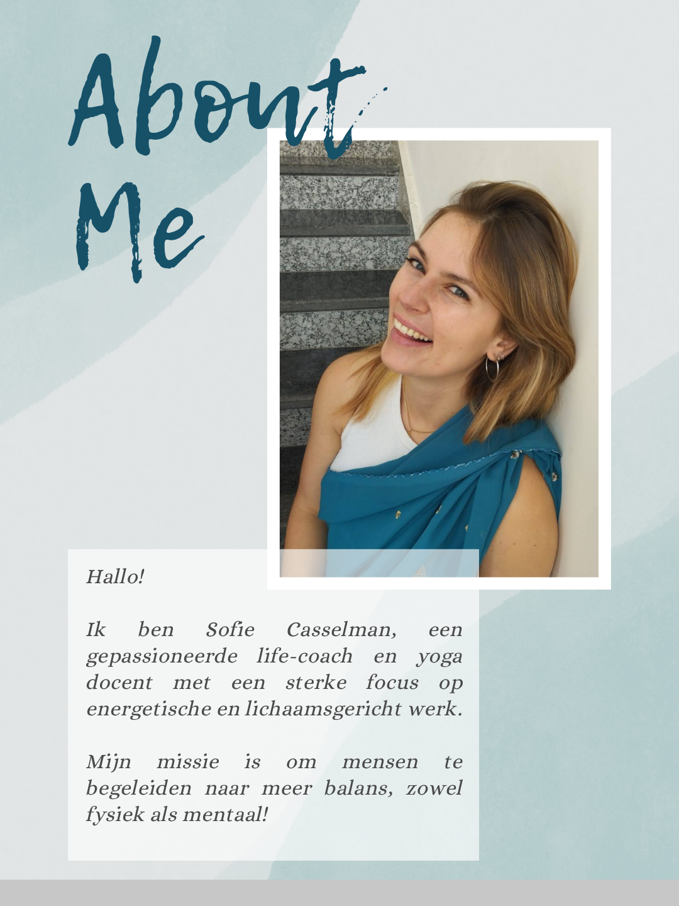

Rust. Kracht. Helderheid.
Lichaamsgerichte coaching en energetisch werk voor diepe heling en persoonlijke groei. Kom thuis in je lichaam en vind rust, kracht en helderheid.
᥋ Aanbod
Flexibele formules, afgestemd op jouw noden.
Het Fysieke Lichaam: De Poort naar een Lichter Leven
Ons fysieke lichaam is ons anker in het hier en nu. Het vertelt ons voortdurend hoe het écht met ons gaat. In ons lichaam ervaren we onze gevoelens, spreekt onze intuïtie tot ons, en stroomt onze energie. Ook onze gedachten en overtuigingen laten er hun sporen na. En — niet onbelangrijk — ons lichaam draagt ook de herinnering van alles wat we hebben meegemaakt.
Ons lichaam kent geen tijd of ruimte. Wat in het verleden is gebeurd, kan vandaag nog steeds als bedreigend aanvoelen. Zo kan trauma zich vastzetten, zelfs als we het "met ons hoofd" allang hebben begrepen. Tijd alleen heelt niet altijd — soms is er iets diepers nodig.
Daarom vertrek ik in mijn coaching altijd vanuit het lichaam zelf.
Ik begeleid via verschillende vormen van lichaamsgericht werk:
- Opstellingswerk en energetisch werk
- Trance- en hypnosewerk (onderbewustzijn en innerlijk kind)
- Zenuwstelselregulatie (ademwerk en tapping)
- Yoga en meditatie-initiatie (bewustwording, gronding en vertrouwen)

ॐ Meditatie & Yoga Initiaties
Contact met het lichaam is de basis van alles. In onze moderne wereld verliezen we dat contact al vroeg: we leren emoties te onderdrukken, intuïtie te negeren, en ons lichaam te beschouwen als iets dat "moet functioneren".
Met meditatie en yoga leer je opnieuw thuis te komen in je lichaam.
Je leert te voelen, te aarden en te vertrouwen op wat je lijf je vertelt. Je leert het verschil herkennen tussen angstgedreven reacties en je gezonde intuïtie. Je ontdekt je fysieke, emotionele en mentale grenzen — en hoe je ze kunt respecteren.
Zo leer je opnieuw de taal van jouw unieke lichaam spreken.
Ook het cyclisch leven hoort hierbij: leren luisteren naar de natuurlijke ritmes van jouw lichaam en energie is een bron van diepe wijsheid.
Opstellingswerk & Lichaamswerk
Met ons hoofd kunnen we vaak veel begrijpen, maar dat betekent niet dat het ook ín ons lichaam geheeld is. Soms blijven oude gevoelens of patronen zich herhalen, ook al "weet" je hoe het zit.
Via opstellingen en lichaamswerk laten we het lichaam spreken. We geven innerlijke dynamieken letterlijk ruimte en vorm, waardoor je onverwachte inzichten krijgt in wat er werkelijk in je leeft. Je lichaam liegt nooit — het wijst de weg naar wat gezien en bevrijd wil worden.
Lichaamsgericht werken helpt om blokkades te doorbreken en opnieuw in stroming te komen.
᨞ Trance & Hypnose Werk
In ons onderbewustzijn leven overtuigingen, emoties en herinneringen die we met ons bewuste verstand niet altijd kunnen bereiken. Toch sturen ze ons dagelijks — vaak zonder dat we het beseffen.
Via een lichte trance verbinden we met het onderbewuste, altijd via het lichaam als poort. Zo werken we met innerlijk kind heling, het vrijmaken van vastgezette emoties en het transformeren van beperkende overtuigingen.
Wat onbewust was, wordt zichtbaar — en alles wat bewust wordt, kan beginnen te helen.
᥋ Werken met het Zenuwstelsel
Wanneer we getriggerd worden, reageert ons lichaam razendsnel: het hart klopt sneller, gedachten schieten alle kanten op, we voelen paniek of spanning. Dit zijn natuurlijke overlevingsreacties, maar ze kunnen ons gevangen houden in angst. Daarom kan het soms fijn zijn om ons lichaam fysiek tot rust te brengen.
Door technieken als bewuste ademhaling en tapping (het zachtjes aanraken van specifieke acupressuurpunten) brengen we het zenuwstelsel weer in rust. Vanuit die rust ontstaat helderheid, ruimte en zelfverbinding.
Wanneer het lichaam zich veilig voelt, kunnen we dieper kijken naar de oorzaak van de trigger — en ze aan de wortel helen. Zo ontstaat blijvende innerlijke rust en vrijheid.
᨞ Contact
Ik hoor graag van je. Stuur een kort bericht naar info@camaris.be en ik neem snel contact met je op.
Liever een Whatsapp of even bellen, dat kan natuurlijk ook op het nummer +32 468 10 67 99.

🌿 Over Mij
Ik ben zelf lang op zoek geweest naar de juiste vorm van therapie.
Jarenlang volgde ik praattherapie, maar hoe goed ik het allemaal ook begreep, er veranderde vanbinnen weinig. Ik wist wát er aan de hand was, maar voelde geen echte beweging. Mijn hoofd leek het te snappen, maar mijn lichaam vertelde een ander verhaal.
Die zoektocht bracht me uiteindelijk naar India, waar ik mijn Yoga Teacher Training volgde en me verdiepte in de oosterse filosofie. Daar begon ik te ontdekken dat de antwoorden niet altijd in het denken liggen, maar in het voelen — in de subtiele taal van het lichaam, emoties en energie.
Vanuit die ervaring verdiepte ik me verder in energetisch werk en lichaamsgerichte coaching. Langzaam begon alles lichter te voelen. Er kwamen lagen omhoog waarvan ik niet eens wist dat ze er waren — oude emoties, overtuigingen, herinneringen — en telkens voelde ik na zo'n proces opnieuw ruimte, rust en verlichting.
Ik leerde mezelf helen door via mijn lichaam te luisteren, in plaats van alleen via mijn hoofd te begrijpen. En dat is precies wat ik nu aan anderen wil doorgeven: dat heling mogelijk is wanneer we weer thuiskomen in ons lichaam — daar waar onze ware kracht, wijsheid en rust al die tijd al aanwezig waren.
